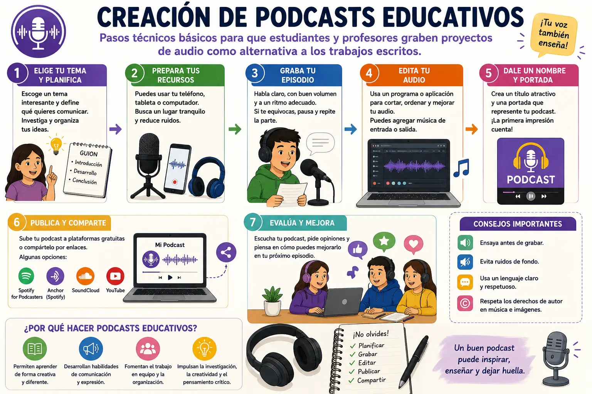

Creación de podcasts educativos
Un podcast educativo es un contenido de audio que puede utilizarse para explicar, compartir o desarrollar diferentes temas relacionados con el aprendizaje. En el ámbito escolar, los estudiantes y profesores pueden crear podcasts para presentar investigaciones, explicar temas, realizar entrevistas o compartir opiniones. Esta herramienta ofrece una forma diferente de presentar los conocimientos y puede complementar los trabajos escritos.
Para crear un podcast, lo primero es escoger un tema y establecer qué se quiere comunicar. Es recomendable investigar la información y organizar las ideas antes de comenzar a grabar. También se puede preparar un pequeño guion con una introducción, el desarrollo del tema y una conclusión. Tener las ideas organizadas ayuda a evitar olvidos y permite que la grabación sea más clara.
El siguiente paso es preparar los recursos necesarios para realizar la grabación. Se puede utilizar un teléfono, una tableta o un computador que tenga micrófono. No es obligatorio contar con equipos profesionales para comenzar, ya que lo más importante es buscar un lugar tranquilo y tratar de reducir los ruidos que puedan afectar la calidad del audio.
Durante la grabación es importante hablar de manera clara y con un volumen adecuado. También se debe mantener una velocidad que permita a los oyentes comprender fácilmente la información. Si se comete un error, se puede hacer una pausa y repetir la parte, ya que posteriormente se pueden eliminar algunos fragmentos durante la edición.
Después de grabar el audio, se puede utilizar un programa o aplicación de edición. En esta etapa es posible cortar partes innecesarias, organizar los diferentes fragmentos y mejorar algunos aspectos del sonido. También se puede agregar una música de introducción o cierre, siempre utilizando recursos que puedan emplearse legalmente y respetando los derechos de autor.
Los podcasts pueden ser una alternativa interesante a algunos trabajos escritos porque permiten demostrar los conocimientos mediante la expresión oral. Por ejemplo, un estudiante puede realizar un episodio explicando un tema de ciencias, presentar una entrevista sobre historia o compartir una reflexión relacionada con una asignatura. Esto también puede ayudar a desarrollar habilidades de comunicación y expresión.
Además, crear un podcast puede favorecer el trabajo en equipo. Varios estudiantes pueden dividir las tareas, como investigar, escribir el guion, realizar la grabación y encargarse de la edición. De esta manera, cada integrante puede aportar sus habilidades y aprender a organizarse para completar un proyecto común.
En conclusión, los podcasts educativos son una herramienta tecnológica que permite presentar información de una manera creativa y diferente. Para realizarlos correctamente es necesario elegir un tema, investigar, preparar un guion, grabar en un lugar adecuado y editar el audio. Su utilización en las actividades escolares puede hacer que los estudiantes participen de forma más activa y desarrollen habilidades de investigación, comunicación, creatividad y trabajo en equipo.
